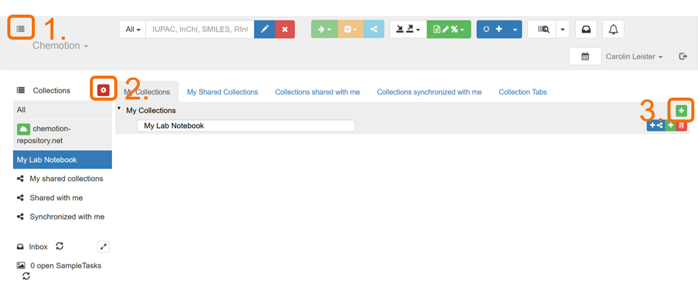
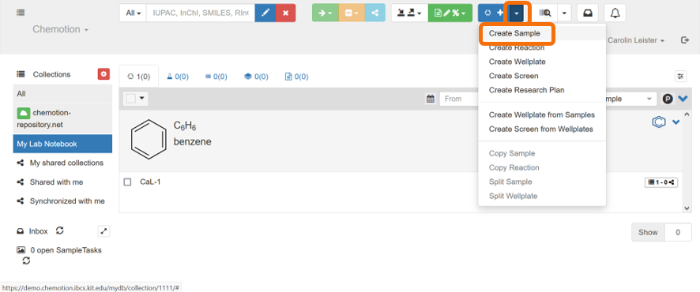
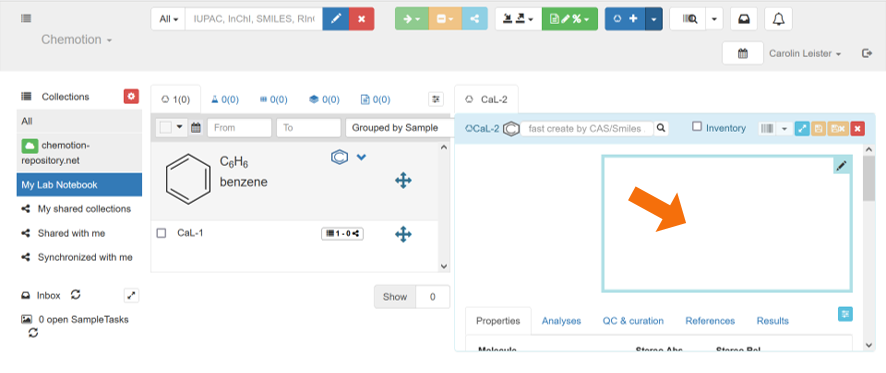
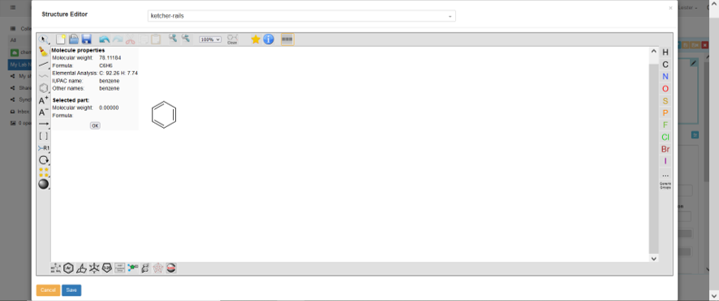
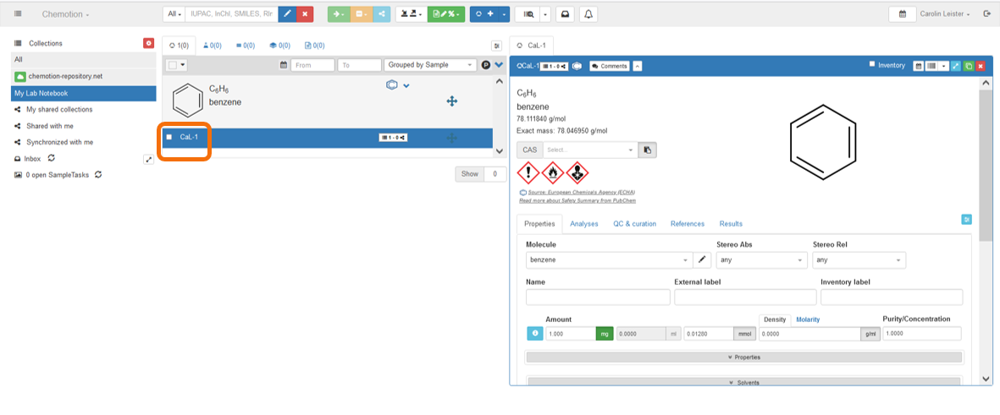

2.2 Example: Chemotion
The content in this section is adapted from RDM@KIT.
Chemotion offers a free-to-use infrastructure and open source software for the management of research data, especially for chemists and related sciences. Chemotion includes a suite consisting of an electronic laboratory notebook (Chemotion ELN), a web repository and helpful tools. The goal is to simplify routine work with molecular data, thus increasing the amount of open data and improving the quality of the information obtained and published.
The software is increasingly being extended to related fields and further developed into a generic ELN (“LabIMotion”). You can find more information about Chemotion on the website, as well as via NFDI4Chem, which regularly holds events such as Q&As and hands-on workshops, and via the Chemotion ELN YouTube channel.
Syllabus Elements
Learning Objectives
At the end of the section the learners can ...
- Recognizes basic elements in the program Chemotion
- Define use cases for Chemotion
- Determine whether Chemotion is suitable for them
- Knows where to get further information on Chemotion
Target Audience
- attendees of this course
Duration
- 15 minutes
Prerequisites
Learning Tools
Learning Content Topic
What is Chemotion?
- Chemotion is an Electronic Laboratory Notebook (ELN) & Repository for Research Data
- Chemotion ELN - an electronic laboratory notebook (ELN)
- Chemotion Repository - a data repository
- Subject-specific for Chemistry and related fields
- Open Source Software
- Developed at Institute of Organic Chemistry (IOC) / Institute of Biological and Chemical Systems – Functional Molecular Systems (IBCS-FMS) at KIT
- Connected repository for publication of data
- Recommended ELN of the National Research Data Infrastructure for Chemistry (NFDI4Chem)
Chemotion ELN
The information in this section is adapted from Fink et al. (2023): Chemotion ELN Instruction Videos licenced under CC BY 4.0.
-
You can store in the ELN
- Experimental instructions
- Structures (Samples)
- Reactions
- Analytical data
- Access to your working groups shared list of chemicals (Inventory)
-
Further functions:
- Barcode and QR code generation for example for Bruker instruments
- Ontologies implementation (RXNO, CHMO)
- Calender function
- Image editing and annotation
- ...
First instructional video on Chemotion can be found on Youtube.
Hands-on Chemotion ELN
- Go to the Demo version of Chemotion ELN
- Click on
Sign upto create an account for the Demo version - Create a collection with your favorite name (e.g. 'My Lab Notebook')

- Add a sample by using the molecule structure editor Ketcher
- Click on your new collection and then on the blue arrow near the
+andCreate sample - Then click in the Editor field
- Scetch your desired chemical structure
- Do not forget to save your sample! Therefore click on the blue
Save-Button, and then on the yellowSave sample-Button
- Click on your new collection and then on the blue arrow near the
  
- Add additonal information on your molecule
- Click on your molecule and on
CaL-1 - Then add additional information like
Amount,Density,Molarity,Concentration,SolventsBoiling pointand so on. - Note: Adding the
Densityor theMolarityis essential. Automatic calculation of the mass (by volume) - Further down you can find the automatically generated SMILES and InChI codes
- In the
Analysis-Section you can add Analysis like NMR data - You can also add Literature by the DOI in the
Literature-Section - For more information click here.
- Click on your molecule and on

You can also add reactions and analysis and much more. When you want to publish your data you can do this directly in the Chemotion Repository.
Summary
- Chemotion is an Electronic Lab Notebook and Repository for Chemistry Data
References
Further information
-
Upcoming events on Chemotion ELN
-
More information
-
You need help:
- Contact the helpdesk
Suggested reading
- Tremouilhac et al. (2017): Chemotion ELN: an Open Source electronic lab notebook for chemists in academia. In: Journal of cheminformatics 9 (1), p. 54. DOI: https://doi.org/10.1186/s13321-017-0240-0.
- Kotov et al. (2018): Chemotion-ELN part 2: adaption of an embedded Ketcher editor to advanced research applications. In: Journal of cheminformatics 10 (1), p. 38. DOI: https://doi.org/10.1186/s13321-018-0292-9.